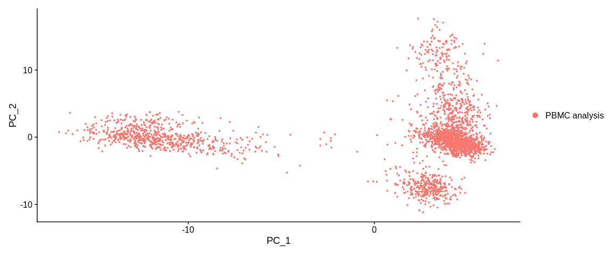
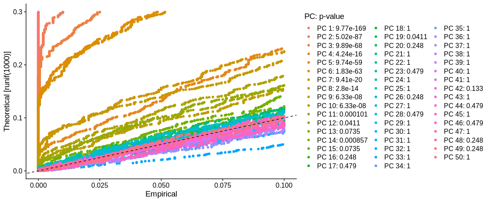
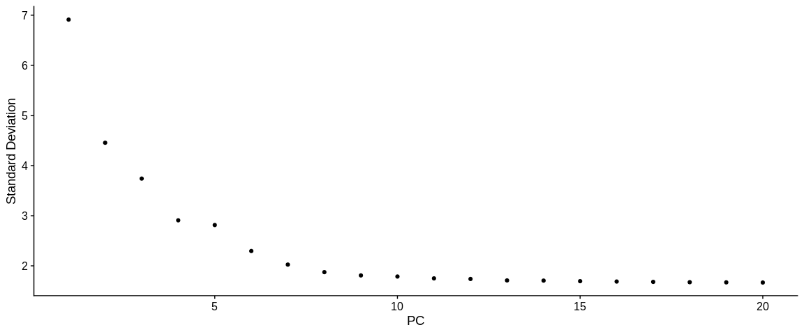
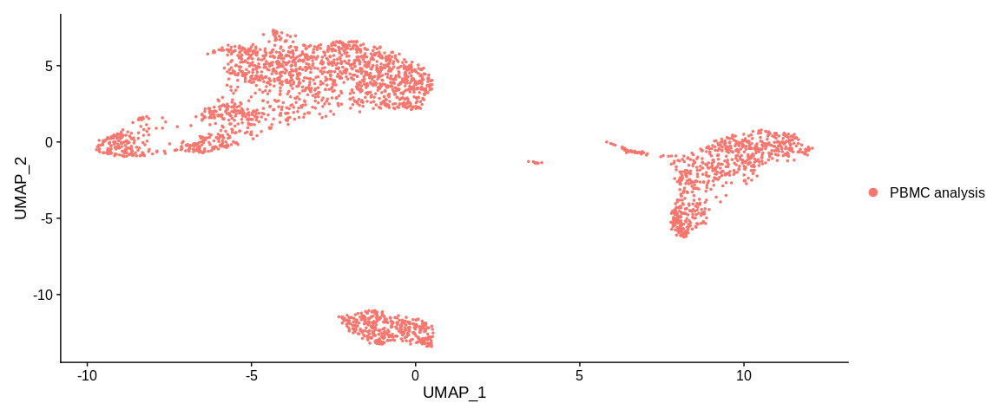

Reduction of dimensionality¶
In order to identify groups of cells, we need to further reduce the dimensional space in which the cells evolve. There are different methods of dimension reduction that will help us to reach our goal: visualize and identify cell populations in a low and relevant dimensional space. Here we will see two methods, the first one is the principal component analysis (PCA) and the second one which is based on the first one: the Uniform Manifold Approximation and Projection (UMAP).
Scaling Data¶
The first step is to perform a data scaling. This step is mandatory
to infer a PCA. The Seurat function ScaleData centers and reduces
the data by taking only the HVG by default. It is also possible to
provide it with a vector of variables to regress (most often we give
it the names of the columns in the meta.data slot of the variables
we want to regress).
The slot object@assays[["RNA"]]@layers$scale.data is now filled.
It is a dataframe of dimensions n HVG x n cells of reduced centered data.
Note
You can use ScaleData on all genes (easier if you need to visualize
gene expression in an heatmap but be carefull and specify
features = VariableFeatures(pbmc_small) in the RunPCA function
explained below)
Principal Component Analysis (PCA)¶
A 2000 dimensional space is always too large to easily find similarities and differences between cells. We will now use a dimension reduction method called PCA. Briefly, the PCA will represent the point cloud in the 2000 dimensions and then look for the angle that will allow to split the cells on a plan as much as possible. The resulting dimensions are called principal components (PCs) and are composed of a combinatorics of the previous dimensions (the gene expressions).
I recommend the videos of Luis Serrano and Josh Starmer that explain step by step the PCA in image.
We will use the Seurat function RunPCA. For storage reasons, the npcs
parameter allows to keep in the seurat object only the first PCs, by default
the first 50.
pbmc_small <- RunPCA(pbmc_small, #SeuratObject
reduction.name = "pca", #Name of the reduction stored in the reduction slot
npcs = 50, #Total Number of PCs to compute and store (50 by default)
seed.use = 42, #Set a random seed. By default, sets the seed to 42.
verbose = TRUE)
## Graphic representation of cells
PCAPlot(pbmc_small, #SeuratObject
dims = c(1, 2)) #Dimensions (PCs) to plot, default is the first two

The slot object@reductions$pca is now created. It is an S4 object of
class DimReduc composed of several sub slots :
@cell.embeddings: dataframe of the cell coordinates on the different PCs@feature.loadings: dataframe of the feature loadings (interpreted as the coefficients of the lineal combinatorial of the initial variables (the expression of the genes) from which the PCs are built)@feature.loadings.projected: dataframe of the projected feature loadings (empty)@assay.used: name of the assay used (hereRNA)@global: logic but no more description found on this slot@stdev: vector of standard deviation of stored PCs@key: prefix used to name the PCs, linked to thereduction.keyparameter ofRunPCA, defaultPC_@jackstraw: slot for Jack Straw analysis (currently empty)@misc: described as a slot for additional information (total variance)
The plot function represents our cells in the dimensional space of the first
two PCs of the PCA. By default the colorization of the cells is based on the
active.ident and thus for the moment, the orig.ident column of the
metadata.
Uniform Manifold Approximation and Projection (UMAP)¶
We were able to reduce the dimensions to 50 but like the genes, not all the principal components contain relevant information. We will first select the PCs that will be used for the calculation of the UMAP and the generation of clusters.
PCs selection¶
There are several methods to select the relevant PCs, here we will use the Jack Straw method and the Elbow Plot.
Jack Straw Method¶
Seurat uses an adaptation of the Jack Straw method. The aim is to evaluate the robustness of the PCA by comparing the composition of the PCs with that of PCs computed from permuted data.
The JackStraw function will perform 100 permutations (default value of the
num.replicate parameter). At each permutation, it will randomly select 1%
of the most variable genes (default proportion, parameter prop.freq).
JackStraw will mix the values of the slot object@assays[["RNA"]]@layers$scale.data
filter on these genes and then perform a PCA on this fake matrix.
From these results and for each PC, it calculates the number of times the
values of the fake loadings (\(fakevals\)) is greater than each value of the
observed loading (\(trueval\)), such as :
The ScoreJackStraw function uses the reduced variance test also called
\(Z\) test (R function prop.test). It allows to test for each PC if the
probability that \(Empirical.pval\) is greater than the threshold (parameter
score.thresh) is different from the expected proportion under a uniform
distribution of p-values.
## JackStraw : Determine statistical significance of PCA scores
pbmc_small <- JackStraw(pbmc_small, #SeuratObject
reduction = "pca", #Reduction to analyse
dims = 50, #Number of dimension to analyse
assay = "RNA") #Assay to use
## Compute Jackstraw scores significance.
pbmc_small <- ScoreJackStraw(pbmc_small, #SeuratObject
dims = 1:50) #Number of dimension to analyse
The results are contained in the slot object@reductions$pca@jackstraw,
it's an S4 object of class JackStrawData with different informations :
empirical.p.values: dataframe of the p-values for each most variable gene (2000, in row) and each PCs (50, in column)fake.reduction.scores: dataframe of the loadings resulting from the PCA on the permuted data (2000 "genes" x 50 PCs)empirical.p.values.full: logicNA.overall.p.values: results of the p-values of the \(Z\) test computed by theScoreJackStrawfunction, one value per PC
## Representation JackStrow
JackStrawPlot(pbmc_small, #SeuratObject
dims = 1:50) #Number of dimension to plot

We look for a "jump" in the values of the PCs. We usually try to recover the PCs whose value is significant. Here we can stop at PC 10, because PC 11 has a value of 1e-4 and then the rest of the PCs just oscillate with values equal to 1. If we want to be more stringent we can also select only the first 8 PCs because then the value increases and then decreases. The fact of being more stringent allows us to reduce the background noise, on the other hand we eliminate the possibility of observing more subtle similarities between our cells.
Elbow plot method¶
This method consists in finding a "bend" in the distribution of the standard deviations of the different PCs.
ElbowPlot(pbmc_small, #SeuratObject
ndims = 20, #Number of dimension to analyse
reduction = "pca") #Reduction to analyse

After visualizing the Elbow plot with 50 PCs, we reduced it to 20PCs because it was too complicated to observe a bend. Here we could see a small jump in the distribution between PCs 10 and 15 which would corroborate with the Jack Straw results.
-> We can determine the choice of the number of PCs at 10.
Note
I find the Elbow Plot method much more complicated to decide how many PCs to keep. But it allows to have a second opinion, at choice I prefer to base myself on the Jack Straw result
UMAP Inference¶
Even if the PCA allows to reduce the dimensions and allow us to see groups of cells, the UMAP method improves this signal. Indeed from the PCA coordinate matrix, it will build a graph that represents our cells in an even smaller dimensional space while keeping the global structure of our initial point cloud.
Summary of the method:
UMAP constructs a nearest neighbor graph in a smaller dimensional space. The first step is the generation of a kNN (k nearest neighbors) graph. The bigger k is, the more it preserves the global structure of our data. On the contrary, a smaller k will better preserve the local structure. The connections between our points (cells) are weighted according to the distance between two points, the weight of the connection between two distant points will be lower than between two close points. Then we project the cells according to this weighted graph.
The UMAP is used more often than the t-SNE nowadays because the latter represents the distances in a more complex way. UMAP allows to better balance the global and local similarities compared to t-SNE (and it is faster!).
RunUMAP is the Seurat function that allows us to generate a UMAP.
With the dims parameter we can tell it which PCs to keep.
pbmc_small <- RunUMAP(pbmc_small, #SeuratObject
reduction = "pca", #Reduction used to compute UMAP
reduction.key = "UMAP_", #Dimension prefix
assay = "RNA", #Assay to use
dims = 1:pc_to_keep) #Number of PCs to keep (previously determined)
## Plot
UMAPPlot(pbmc_small)

The slot object@reductions$umap is now created. It is an S4 object of
class DimReduc, it is composed of several sub slots :
@cell.embeddings: dataframe of the coordinates of the cells on the different components of the UMAP@feature.loadings: (empty for the UMAP)@feature.loadings.projected: (empty for UMAP)@assay.used: name of the assay used (here"RNA")@global: logical but no more description found on this slot@stdev: (empty for UMAP)@key: prefix used to name PCs, linked toreduction.keyparameter ofRunUMAP, defaultUMAP_.@jackstraw: (empty for UMAP)@misc: described as a slot for additional information (empty)
The plot function represents our cells in the dimensional space of the first
two dimensions of the UMAP. By default the colorization of the cells is based
on the active.ident so the orig.ident column of the metadata.